Introduzione
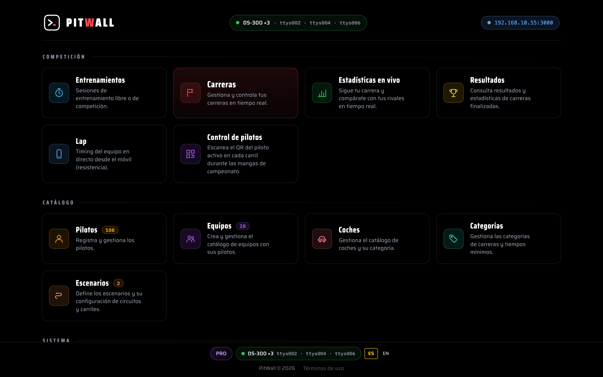
PitWall è il sistema di cronometraggio e gestione delle gare di slot. Rileva il passaggio di ciascuna auto sulla linea del traguardo tramite l'hardware di cronometraggio, con due opzioni compatibili:
- DS-300 — tramite porta seriale. Puoi collegare fino a 6 circuiti DS-300 in una sola gara: ogni box cronometra le proprie corsie e PitWall le combina. Ogni box usa la propria porta (un box = una porta).
- DS-300 aggregatore — quando un dispositivo aggregatore riunisce più box DS-300 (da 2 a 4) su un'unica porta COM. PitWall separa i box in base al loro identificatore di trama e numera le corsie di seguito (box 1 → 1–8, box 2 → 9–16, e così via fino a 32 corsie con 4 box). Un unico segnale di partenza avvia tutti i box insieme.
- BART (Policar) — tramite Bluetooth. Supporta fino al massimo di corsie consentito da BART (attualmente 32).
Puoi usare una qualsiasi di queste fonti; per PitWall il flusso dei passaggi è equivalente.
- Dalla schermata iniziale accedi a Gare ("Carreras"), Impostazioni ("Ajustes") e al resto dei moduli.
- In basso a destra vedi sempre lo stato del collegamento (verde = connesso; "Sin señal" = controlla il cavo/porta o il Bluetooth).
L'elenco delle gare ti mostra tutte le tue gare con il loro stato (in attesa / attiva / terminata) e il pulsante Nuova gara ("+ Nueva carrera").
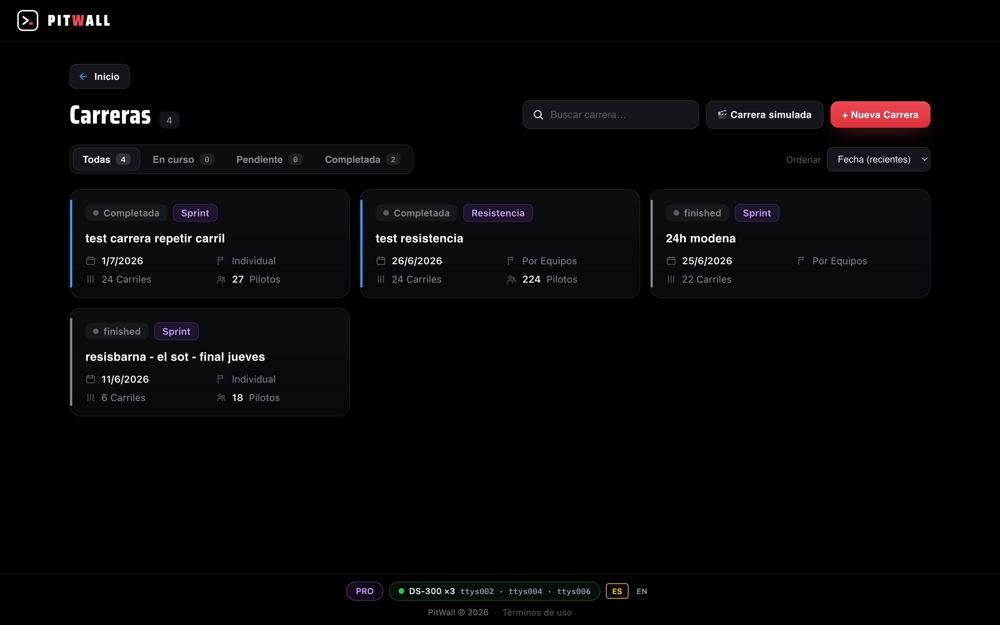
Scenari, categorie e cataloghi (la tua libreria)
Per non riconfigurare le stesse cose a ogni gara, PitWall salva modelli riutilizzabili che poi scegli al momento di creare una gara.
Scenari (circuiti salvati)
Uno scenario è una pista fisica salvata: n° di circuiti e corsie (p.es. 8+8+8 = 24), la sua sequenza di corsie (rotazione) e il tempo minimo predefinito. Qualsiasi gara assegnata a quello scenario eredita tutto automaticamente.
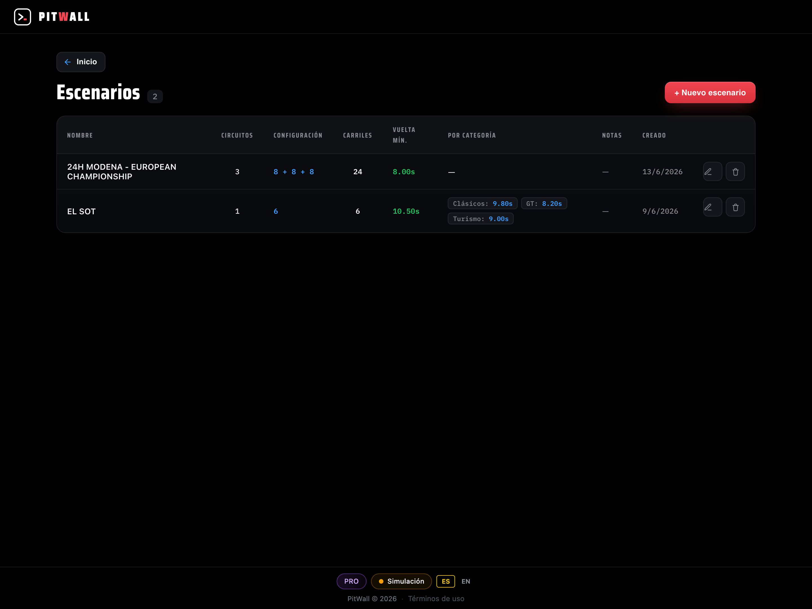
Modificando uno scenario ne definisci il nome, la configurazione delle corsie, trascini la sequenza di rotazione (con riposi DSC se avanzano piloti), il tempo minimo predefinito e, facoltativamente, i giri minimi per categoria (un Pt diverso per GT, Turismo, Classiche… su quella stessa pista).
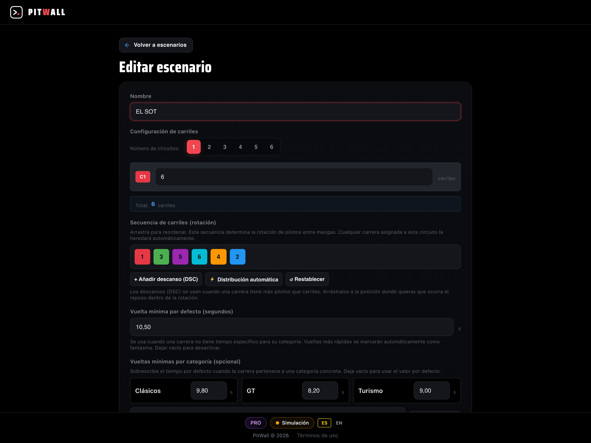
Categorie
Gruppi di livello/classe (GT, Turismo, Classiche…) che servono a sovrascrivere il tempo minimo (Pt) per categoria in ogni scenario e a classificare auto e piloti.
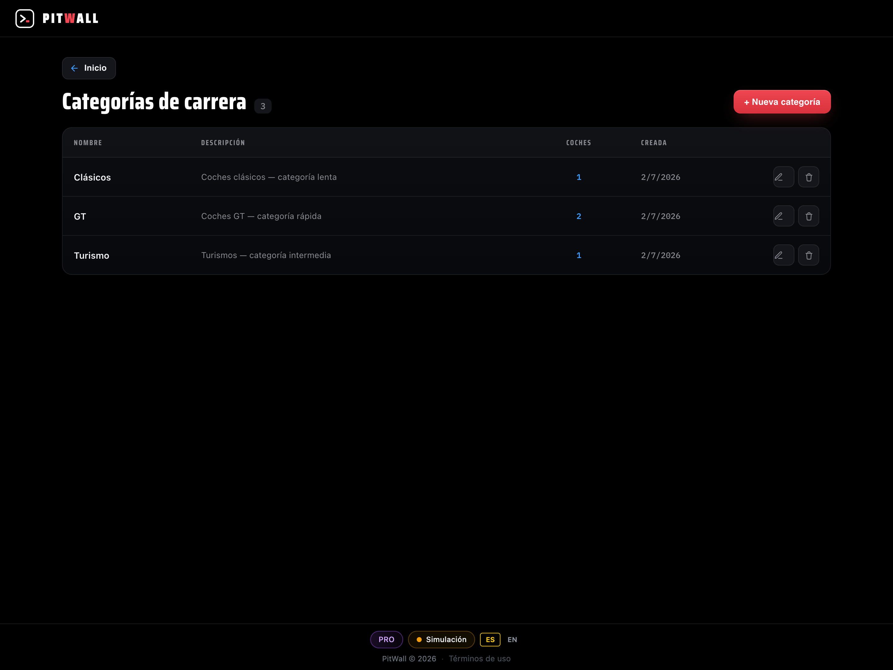
Cataloghi riutilizzabili (piloti, squadre, auto)
Mantieni il tuo database di partecipanti e materiale per riutilizzarlo tra le gare:
- Piloti — nome e categoria; ogni pilota può avere il proprio QR di identificazione.
- Squadre — nome, colore, nazione, auto e componenti.
- Auto — marca, modello e categoria.
Tutti possono essere importati in blocco da CSV (pulsanti Modello CSV ("Plantilla CSV") e Importa CSV ("Importar CSV"), con anteprima delle novità vs. duplicati) ed esportati.
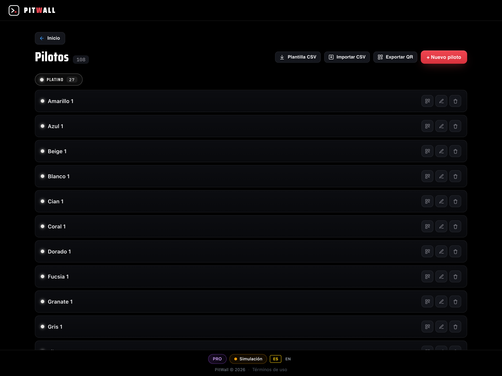
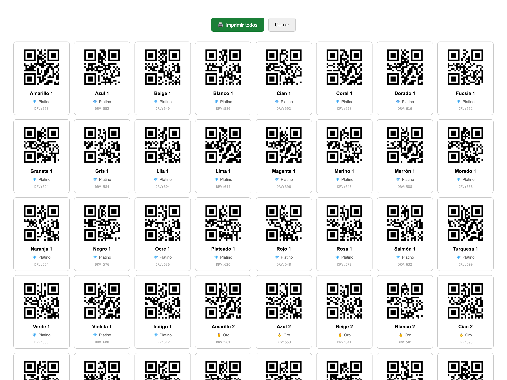
Creare una gara
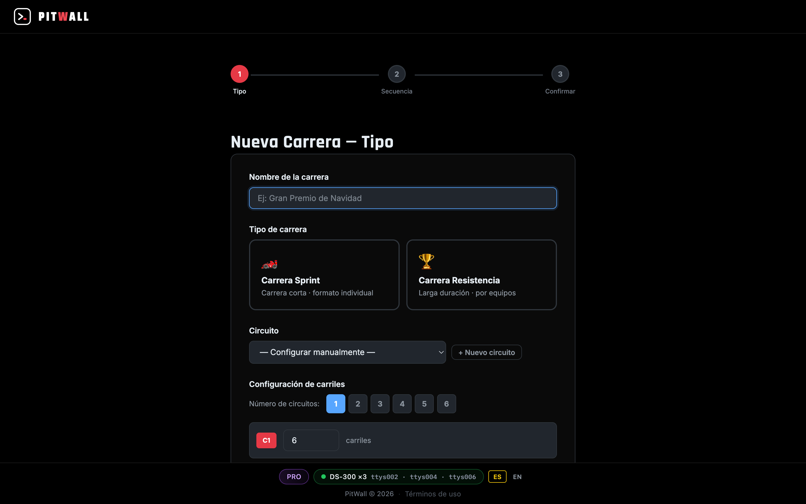
Premi Nuova gara ("+ Nueva carrera") e segui la procedura guidata:
- Tipo:
- Sprint → una gara veloce, di piloti o squadre.
- Resistenza → una gara di resistenza (a squadre), che aggiunge il controllo di quanto ha corso ciascun pilota della squadra (vedi Controllo dei turni di pilota).
- Corsie e circuiti: n° totale di corsie e come si ripartiscono tra i box (p.es. 8+8+6 = 3 box DS-300).
- Tempo minimo di giro (Pt): al di sotto di questo tempo, un passaggio è considerato fantasma (rimbalzo/doppia lettura) e non conta.
- Passate: quante volte si percorre l'intera sequenza di corsie. 2 passate = la rotazione completa si corre 2 volte (il doppio delle manche).
- Ripeti corsia: ogni corsia si corre questo n° di manche di seguito (stessa corsia), sommando i giri — per confrontare ogni ripetizione.
- Pole (facoltativa) e regole di pilota (solo campionato: min/max per pilota, blocco del cambio a fine manche).
Importare una tanda da PitWall Control
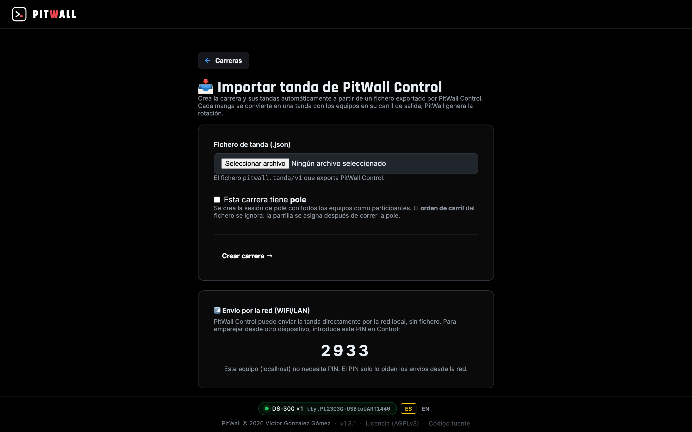
Se organizzi il campionato con PitWall Control (il gestore di stagione), puoi allestire lì la prova —squadre, coppe, corsie e rotazione— e passarla a PitWall senza ridigitare nulla. PitWall crea automaticamente la gara da ciò che riceve.
Entra in Gare → Importa tanda. Ci sono due modi per portare la prova:
- File JSON — in Control premi Esporta tanda (JSON) e salvi il file; in PitWall lo carichi nella schermata di importazione.
- Via rete (WiFi/LAN) — in Control premi Invia a PitWall: Control rileva il tuo PitWall sulla rete locale (o gli indichi l'IP a mano) e chiede un PIN di abbinamento. Quel PIN è quello mostrato dalla schermata Importa tanda di PitWall — digitalo in Control per autorizzare l'invio.
Cosa crea PitWall. Ogni manche della prova di Control diventa una tanda, con ciascuna squadra collocata nella sua corsia di partenza. I riposi (D1, D2…) vengono collocati e ruotati come in qualsiasi rotazione (vedi Tande, partecipanti e rotazione).
Con pole. Se la prova ha la pole (interruttore La gara ha pole in Control; esportando su file te lo chiede), Control non invia l'ordine delle corsie. Nella schermata di importazione di PitWall spunta Questa gara ha pole: PitWall crea la gara con la sessione di pole (tutte le squadre) e la griglia si decide dopo aver corso la pole (vedi Pole).
Tande, partecipanti e rotazione
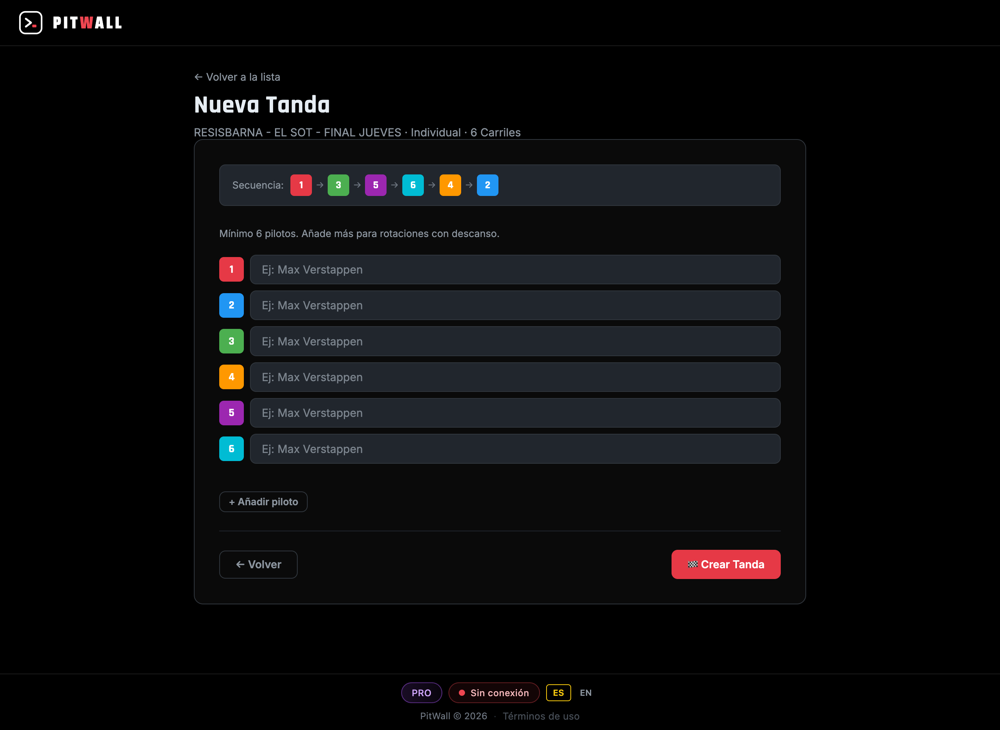
Una tanda raggruppa i partecipanti e la loro rotazione di corsie per manche. Aggiungendo le squadre/piloti, PitWall genera automaticamente tutte le manche.
Come funziona la rotazione
Ogni partecipante cambia corsia manche dopo manche seguendo la sequenza configurata (p.es. 1, 3, 5, 6, 4, 2). Così tutti passano per tutte le corsie e le condizioni si equiparano.
- Esempio (6 corsie, 6 piloti): nella manche 1 il pilota A corre la corsia 1; nella manche 2, la 3; nella 3, la 5… fino a completare il giro di tutte le corsie.
Rotazione a piacere
PitWall propone automaticamente una rotazione equilibrata, ma puoi gestirla come vuoi: riordina la sequenza di corsie a mano (trascinando) per decidere esattamente per quale corsia passa ciascun partecipante in ogni manche.
Riposi
Se ci sono più partecipanti che corsie, la sequenza include spazi vuoti (0 / DSC) che sono riposi: in quella manche quel partecipante non corre. PitWall li distribuisce in modo equilibrato, ma puoi anche collocarli dove vuoi all'interno della rotazione (trascinali nella posizione che preferisci).
Con passate / ripeti corsia
- 2 passate → l'intera sequenza si ripete: 1,3,5,6,4,2, 1,3,5,6,4,2.
- Ripeti corsia 2 → ogni corsia, due manche di seguito: 1,1,3,3,5,5,6,6,4,4,2,2.
Modificare gara, tande e manche
Dopo aver creato una gara puoi ritoccarla:
- Modifica gara ("Editar carrera") — cambiare il nome e, finché non ci sono giri registrati, lo scenario. Puoi assegnare uno scenario a una gara che non ne aveva, cambiarlo con un altro o toglierlo. Assegnando uno scenario, la gara ne eredita le corsie, la sequenza di rotazione e il tempo minimo (e i giri minimi per categoria, se presenti), e PitWall rigenera le tande in sospeso con quella configurazione; togliendolo, la gara passa in modalità manuale conservando la configurazione che aveva. Se ci sono già giri, lo scenario resta bloccato (per non rovinare i dati).
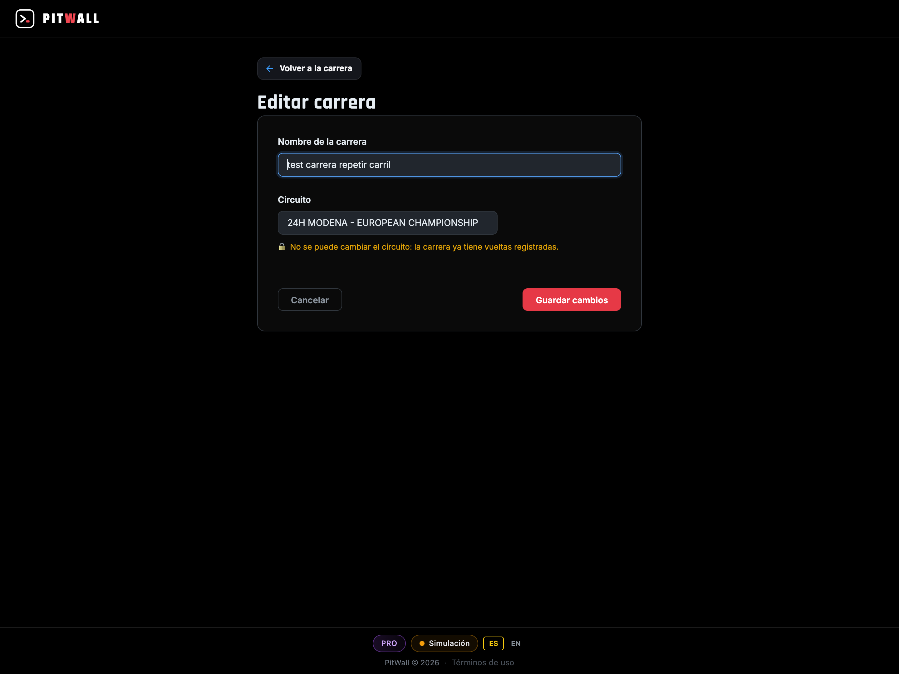
- Modifica tanda ("Editar tanda") — cambiare i nomi dei partecipanti e, se la tanda non è ancora iniziata, la sua composizione. Se ha già manche avviate, entra in modalità solo rinomina (non si aggiungono né si tolgono partecipanti, per non scompaginare la rotazione).
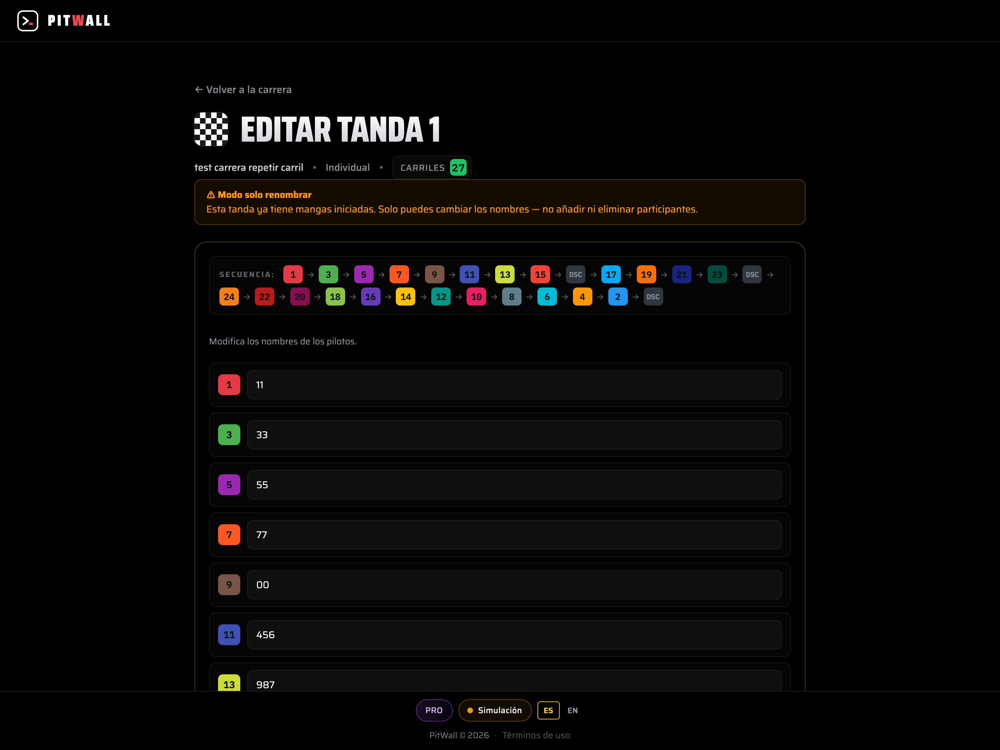
- Modifica manche ("Editar manga") — cambiare chi corre in ogni corsia in una manche specifica, senza rigenerare tutta la tanda (utile se una squadra non si presenta o c'è un cambio dell'ultimo minuto).
Pole (qualifica preliminare)
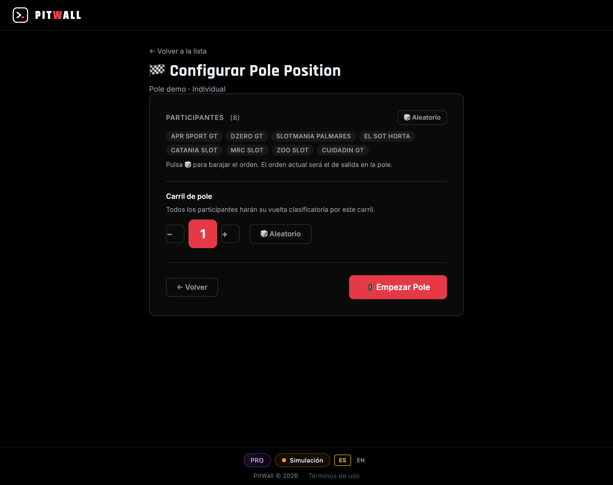
La pole è un giro di qualifica prima della gara per decidere l'ordine di partenza. È facoltativa; si attiva al momento di creare la gara (Pole) e si lancia dalla pagina della gara → Configura Pole Position ("Configurar Pole Position").
- Partecipanti: compaiono tutti gli iscritti. L'ordine dell'elenco è l'ordine in cui usciranno a fare il loro giro; premi 🎲 Casuale ("🎲 Aleatorio") per mescolarlo.
- Corsia di pole: tutti fanno il loro giro di qualifica sulla stessa corsia (perché sia confrontabile). Scegliela con −/+ o con 🎲 Casuale ("🎲 Aleatorio").
- Premi Inizia Pole ("Empezar Pole"): ogni partecipante entra a turno, fa il suo giro e PitWall registra il suo miglior tempo. Nel cronometraggio puoi attivare Salta 1° passaggio (out-lap) ("Omitir 1er cruce (out-lap)") per non contare il giro di lancio.
Risultati della pole
Al termine compare Risultati Pole ("Resultados Pole") con la classifica finale (dal più veloce al più lento, con il gap dal leader e il giro veloce). Da qui puoi ✏️ Modificare i tempi ("✏️ Editar tiempos") se c'è stato un errore, o proseguire con 🚦 Assegna corsie di partenza ("🚦 Asignar carriles de salida").
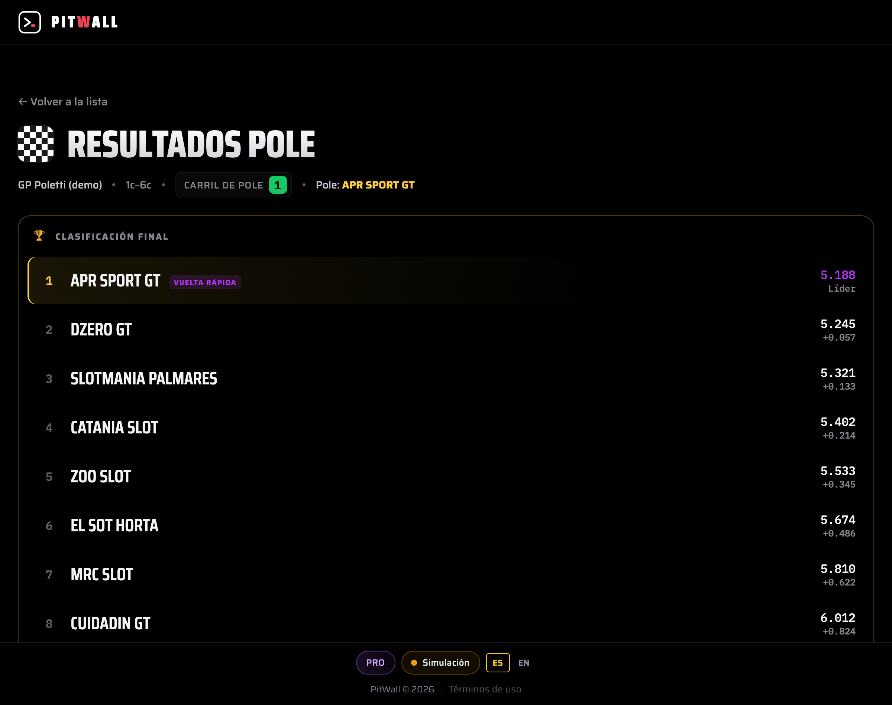
Assegnare le corsie dopo la pole
La pole non distribuisce le corsie automaticamente: apre la schermata Scelta della corsia ("Elección de carril"), dove ogni partecipante sceglie la propria corsia in ordine di classifica — il poleman (il più veloce) sceglie per primo, poi il 2°, e così via. È il classico "il più veloce sceglie la corsia".
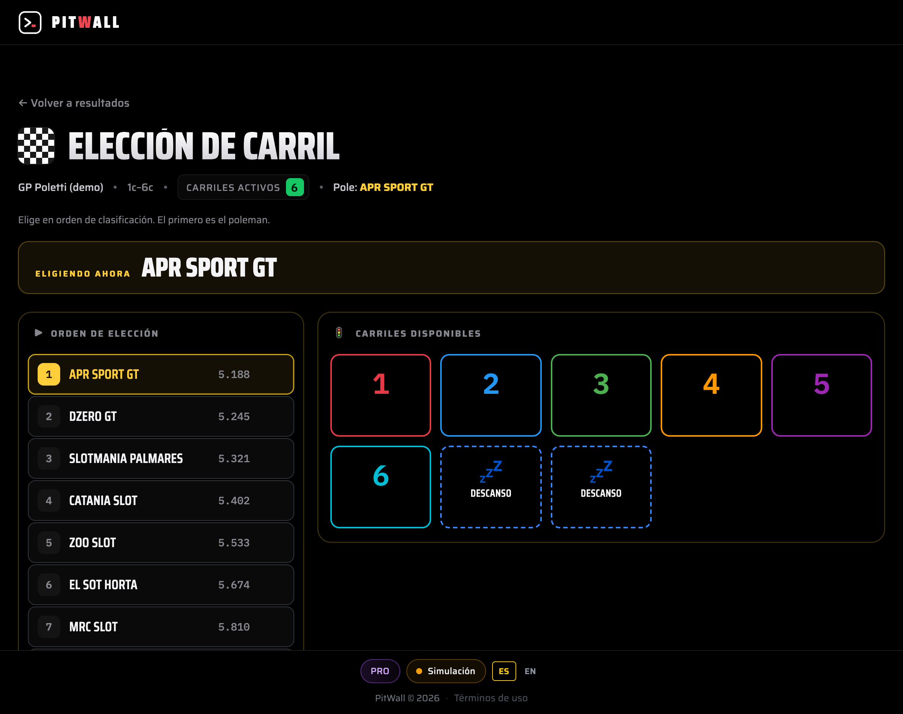
- Il banner Sta scegliendo ora ("Eligiendo ahora") indica a chi tocca; a sinistra vedi l'ordine di scelta (la classifica) e a destra le corsie disponibili (con il loro colore).
- Ciascuno preme la corsia che vuole; quella corsia scompare dalle disponibili e il turno passa al successivo.
- Se ci sono più partecipanti che corsie, compaiono spazi di 💤 Riposo ("💤 Descanso"): chi sceglie il riposo non corre la manche 1 ed entra nella rotazione a partire dalla manche 2.
- Quando tutti hanno scelto, premi 🏁 Crea Prima Tanda ("🏁 Crear Primera Tanda"): PitWall crea la tanda e genera tutte le manche con quella griglia come punto di partenza (l'ordine di scelta definisce la posizione iniziale nella rotazione di corsie). Da lì in poi, la gara ruota le corsie manche dopo manche come sempre (vedi Tande e rotazione).
PitWall Lap — PIN per le squadre
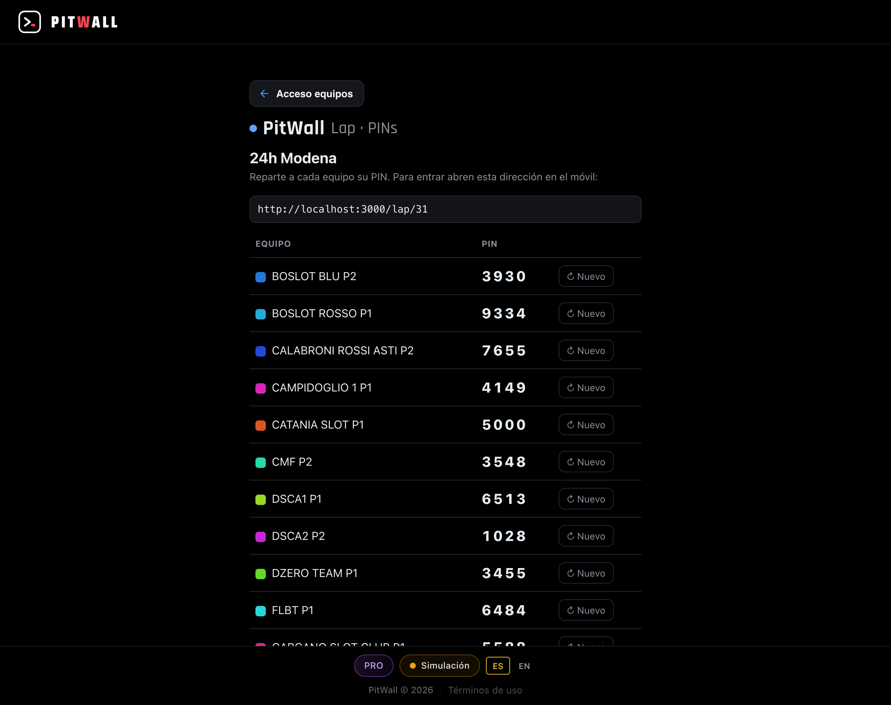
PitWall Lap è la vista mobile che permette a ciascuna squadra/pilota di seguire il proprio cronometraggio dal telefono (i propri giri, annunciati a voce, e la propria posizione). Perché entrino solo nel loro pannello si distribuisce un PIN per squadra.
- Entra in PitWall Lap · PIN della gara. Vedrai l'indirizzo che le squadre aprono sul cellulare (p.es. http://<IP-del-server>:3000/lap/<id>) e la tabella SQUADRA → PIN.
- Dai a ogni squadra il suo PIN. Aprendo l'indirizzo e inserendolo, entrano direttamente nel loro pannello.
- Nuovo ("Nuevo") rigenera il PIN di una squadra (nel caso trapelasse o volessero cambiarlo).
Dirigere la gara in diretta
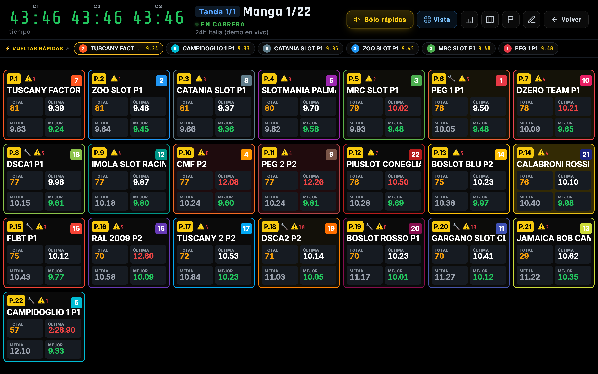
Dalla pagina della gara:
- Armare la manche (▶). Resta pronta in attesa del GO del box.
- GO: dando la partenza dal box, compare il semaforo e parte il cronometro. Ogni circuito ha il proprio orologio (C1/C2/C3).
- Durante la manche vedi per ogni corsia: totale giri, ultimo, media, miglior, e in alto il banner del giro veloce.
- Pausa / Riprendi / Ferma la manche quando serve.
- Al termine (bandiera o fine tempo), la manche si chiude e si prepara la successiva.
- Terminate tutte le manche di una tanda, parte la tanda successiva.
Scegliere la vista. Con il pulsante Vista cambi il layout in base alle corsie: Righe orizzontali (poche corsie), Griglia compatta (molte) o Schede con dettagli (con giri/uscite/pit/Δ per scheda).
Distanza dal leader e stima provvisoria. Nelle schermate di classifica (Le Mans e statistiche in diretta) la distanza dal leader viene data con la virgola e il suo equivalente in secondi —"a 2,8 v (35,5")", cioè a 2,8 giri, ovvero 35,5 secondi—, non arrotondata a giri interi. E se una stima porta un asterisco arancione, quella squadra è ancora nella sua prima manche senza aver superato il 60 %: il suo riferimento non è fissato e la cifra può ancora muoversi. Tutto questo è spiegato in dettaglio nel Manuale di statistiche.
Cambiare tanda, ripetere una manche e finalizzare
Dalla diretta stessa hai scorciatoie senza uscire dalla schermata:
- Tanda successiva ("Siguiente tanda") — quando finiscono le manche di una tanda, passa direttamente alla successiva.
- Ripeti manche ("Repetir manga") — se una manche è stata annullata (falsa partenza, incidente), la rilanci con gli stessi partecipanti e corsie.
- Finalizza gara ("Finalizar carrera") — chiude la gara (la "bandiera"): si congela la classifica e si genera il riepilogo per i risultati e per i cellulari (PitWall Lap).
Controllo dei turni di pilota (campionati)
Nelle gare di campionato a squadre puoi imporre regole di ripartizione del volante tra i piloti di una squadra. Si definiscono al momento di creare la gara:
- Tempo minimo / massimo per pilota — ogni pilota deve girare almeno X e al massimo Y.
- Blocco dopo un cambio — un tempo minimo senza poter ricambiare pilota.
- Massimo di turni per pilota.
I cambi di pilota si registrano scansionando il QR del pilota (o inserendo il suo codice) all'ingresso in pista. Dalla diretta apri Controllo dei turni ("Control de turnos"), che mostra il pilota attuale per corsia, il tempo accumulato di ciascuno (segnalando se viola una regola) e lo storico dei turni; se un cambio è stato registrato male, puoi correggere il tempo del turno.
Giro per giro e correzioni (aggiungere / togliere giri)
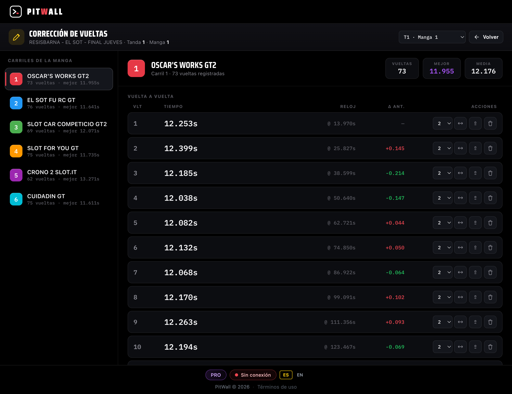
Dalla gara (pulsante di correzione dei giri nella diretta o nei risultati) entri nel giro per giro di ogni manche. Serve a sistemare le letture registrate male.
- Sinistra: le corsie della manche; scegli la squadra/pilota da revisionare.
- Destra: la sua lista di giri — VLT (n°), TEMPO, OROLOGIO (momento di gara) e Δ PREC. (differenza col giro precedente).
- Azioni per giro:
- Trasferisci (↔) — passare il giro a un'altra corsia/squadra (se il sistema lo ha assegnato male).
- Fantasma — segnare il giro come non valido (non conta) senza cancellarlo; si può ripristinare.
- Cancella (🗑) — eliminare un giro.
- Aggiungi giro manuale — se è mancato un passaggio, lo aggiungi a mano.
Risultati ed esportazioni
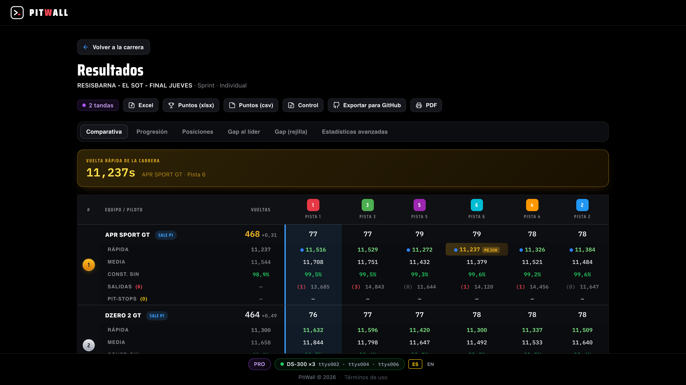
Al termine (o in qualsiasi momento) entra in Risultati ("Resultados"):
- Comparativa (griglia): per partecipante, ogni corsia con Veloce / Media / Consistenza / Uscite / Pit-stop. Nelle gare di passate/ripeti-corsia, ogni corsia si scompone nelle sue occorrenze (1/2, 2/2) per confrontare.
- Progressione / Posizioni / Gap dal leader / Gap (griglia) / Statistiche avanzate: diverse viste di analisi (spiegate in dettaglio nel Manuale delle statistiche).
- Esportazioni: Excel, Punti (xlsx/csv), Control (csv), Esporta per GitHub, PDF.
Risultati pubblici
C'è una pagina aperta —Risultati ("Resultados"), nel menu iniziale— dove chiunque può consultare (senza toccare nulla né poter modificare) i risultati delle gare finalizzate. È quella che condividi con piloti e pubblico affinché guardino la classifica e le statistiche della gara.
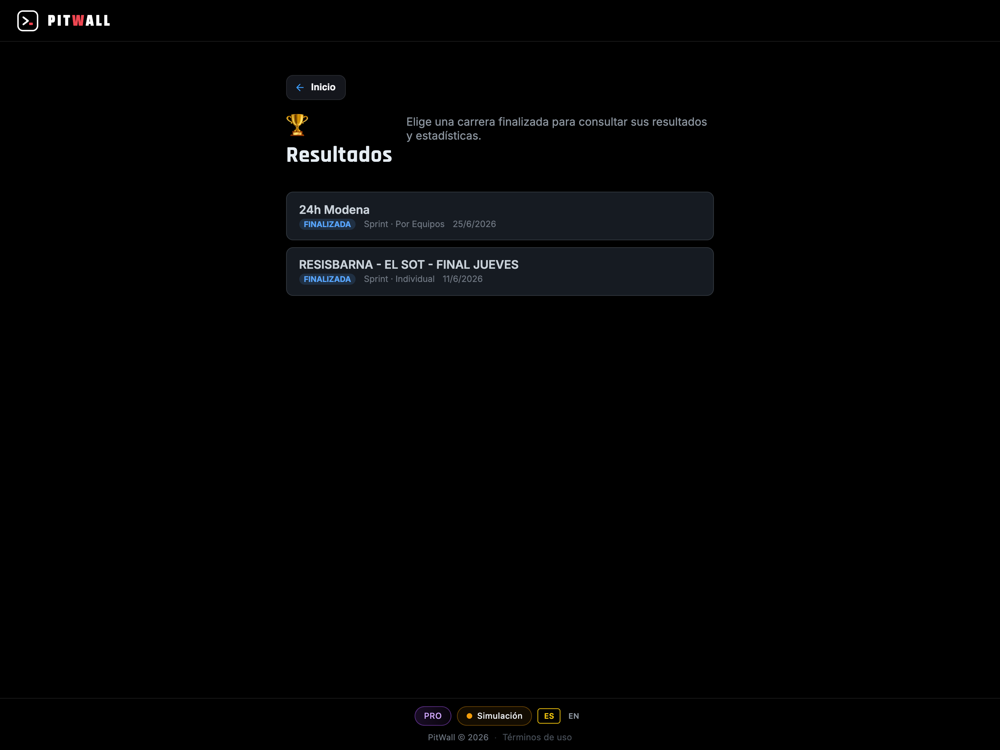
Allenamento
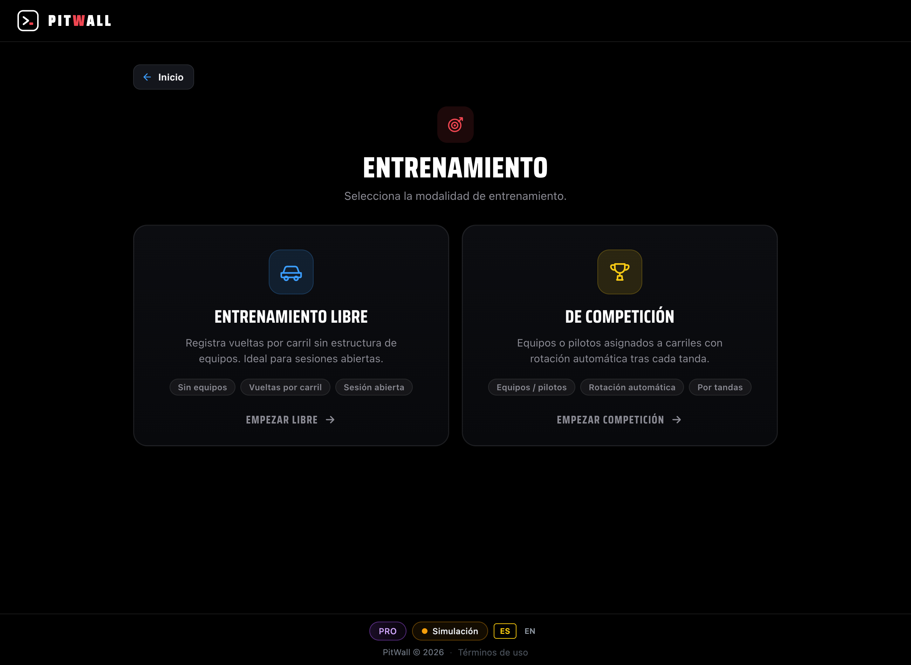
Oltre alle gare, PitWall ha una modalità Allenamento ("Entrenamiento") (dalla schermata iniziale) per girare senza allestire una competizione completa. Ci sono due modalità:
- Allenamento libero: registra giri per corsia senza struttura di squadre. Ideale per sessioni aperte dove ciascuno prova auto e pista; non c'è rotazione né classifica, solo tempi per corsia.
- Da competizione: squadre o piloti assegnati alle corsie con rotazione automatica dopo ogni tanda, come una gara ma pensato per allenare il formato di campionato.
Scegli la modalità, assegna le corsie e premi Inizia ("Empezar"). Il cronometraggio in diretta funziona come in gara (GO del box, giri, miglior/media per corsia).
Gli allenamenti da competizione vengono salvati. Alla caduta della bandiera di ogni tanda, PitWall salva una riga per ogni corsia che ha girato, con il suo partecipante, i suoi giri, il suo miglior giro e la sua media. I partecipanti a riposo e le corsie senza passaggi non lasciano righe. Uno stop forzato non salva quella tanda: viene scartata e ripetuta per intero.
Dalla schermata di preparazione dell'allenamento da competizione, il link Vedi allenamenti salvati ("Ver entrenos guardados") apre l'elenco delle sessioni (data, n° di tande, partecipanti, giri e miglior giro), con la più recente in alto. Premendo una sessione ne vedi il dettaglio in due blocchi:
- Classifica della sessione: vince chi somma più giri in tutte le sue tande e, a parità, chi ha il miglior giro. La media è quella di tutti i suoi giri, ponderata per tanda (una tanda da 40 giri pesa quanto deve rispetto a una da 3).
- Tanda per tanda: il dettaglio di ogni tanda, corsia per corsia.
Ogni sessione si può eliminare dal suo dettaglio. Se fermi la sessione con STOP e ha salvato almeno una tanda, PitWall ti porta direttamente ai suoi risultati.
Impostazioni
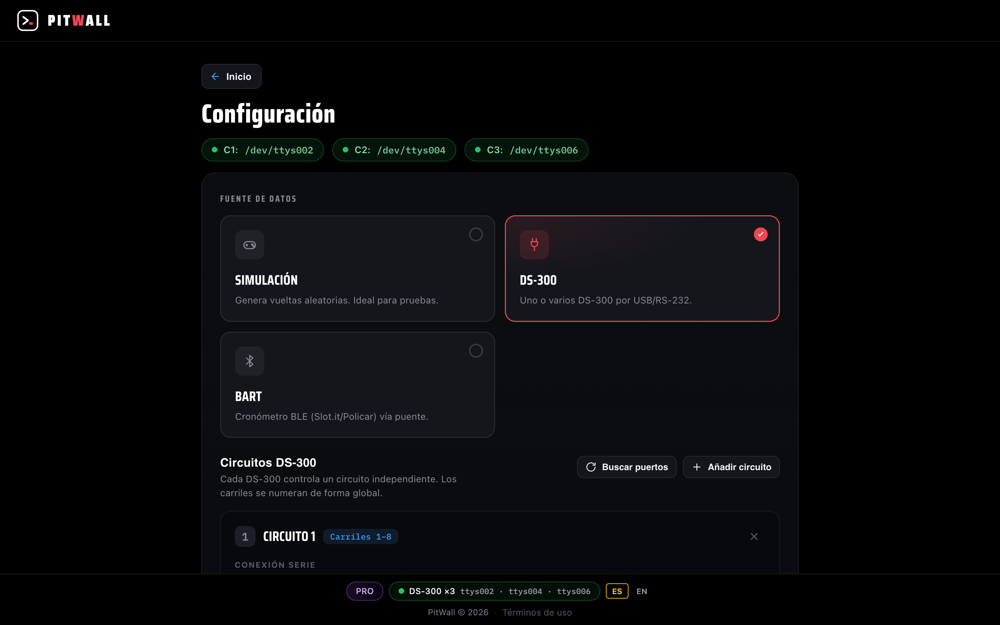
- Sorgente dati: scegli da dove arrivano i passaggi — Simulazione, DS-300 (un box per porta, con il suo n° di corsie), DS-300 aggregatore (più box su un'unica porta COM: indica porta, baud —57600, 8N1— e n° di box 2/3/4 → 16/24/32 corsie) o BART via Bluetooth (si connette in BLE diretto per impostazione predefinita; il TCP resta nell'elenco per l'emulatore o un ponte BLE→TCP). Con l'aggregatore le corsie sono numerate di seguito (box 1 → 1–8, box 2 → 9–16…) e un unico segnale di partenza avvia tutti i box.
- Configurazione della porta, senza complicazioni: per ogni circuito DS-300 (e per l'aggregatore) a colpo d'occhio vedi solo Porta e Baud rate. La porta si sceglie dall'elenco rilevato; se la tua non compare, con « Scrivi il percorso a mano » la digiti (es.
COM3o/dev/ttys003). Il baud rate è un menu a tendina con le velocità abituali (9600–921600), con « Scrivi a mano » per un valore fuori elenco. Le impostazioni fini della seriale (Data bits, Parità, Stop bits, Controllo di flusso) sono ripiegate in « Opzioni avanzate della porta »: di default 8N1, quasi mai da toccare. - Circuiti: definisci le piste salvate (sequenza di corsie, tempo minimo).
- Seguito pubblico su internet: pubblica le viste pubbliche su internet per seguire la gara da fuori della sede (vedi la sezione seguente).
- Licenza e lingua (ES/EN).
Cronologia delle versioni
Nel piè di pagina di tutte le pagine vedi il numero di versione di PitWall. Premendolo si apre la Cronologia delle versioni (/changelog), con ciò che è stato Aggiunto, Migliorato e Corretto in ogni aggiornamento. La versione sale a ogni aggiornamento, così sai sempre quale PitWall hai e cosa è cambiato.
Seguito pubblico su internet
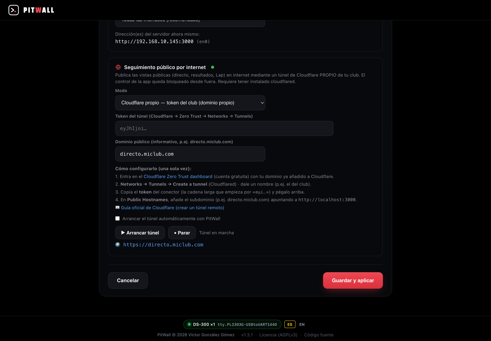
Per impostazione predefinita le viste di PitWall (la diretta, i Risultati e PitWall Lap) sono visibili solo sulla rete locale. Con il Seguito pubblico su internet ogni club può pubblicarle su internet affinché piloti e pubblico seguano la gara da fuori della sede, senza aprire porte né configurare una VPN: PitWall attiva un tunnel Cloudflare proprio del club.
Si trova in Impostazioni → Seguito pubblico su internet. Ci sono due modalità:
- Rapido — PitWall genera al volo una URL temporanea (*.trycloudflare.com): senza account né dominio. È l'opzione per un pomeriggio isolato; tieni presente che la URL cambia a ogni avvio.
- Cloudflare proprio — usi il token del tunnel del club e il tuo dominio, così la URL è fissa e col tuo marchio. La schermata stessa contiene una guida passo passo, con collegamenti al pannello Zero Trust di Cloudflare e alla documentazione ufficiale, per creare il tunnel e incollarne il token.
Comandi. Pulsanti Avvia / Ferma con lo stato e la URL in tempo reale (da copiare e condividere). Avvia applica ciò che hai sullo schermo in quel momento. Puoi attivare l'avvio automatico perché il tunnel si attivi da solo all'apertura di PitWall.
Installare cloudflared. Il tunnel è attivato dallo strumento cloudflared. Se non è installato, compare il pulsante Installa cloudflared, che scarica la versione ufficiale nella cartella dati di PitWall — senza chiedere permessi di amministratore.
Glossario (operazione)
- Gara: l'evento completo. Si compone di tande.
- Tanda: gruppo di partecipanti con la sua rotazione; si compone di manche.
- Manche: una tornata cronometrata (tutte le corsie insieme) di una certa durata.
- Rotazione: come cambiano corsia i partecipanti da una manche all'altra.
- Riposo: manche in cui un partecipante non corre (spazio vuoto 0 nella sequenza).
- Passata: percorso completo della sequenza di corsie; N passate = N× manche.
- Ripeti corsia: correre ogni corsia N manche di seguito, sommando i giri.
- GO: il segnale di partenza (del box DS-300) che avvia la manche.
- Giro fantasma: giro segnato come non valido (non conta), ripristinabile.
- Pole: sessione di qualifica preliminare (facoltativa); tutti girano sulla stessa corsia e il loro miglior giro fissa la griglia di partenza.
- Allenamento libero: modalità per registrare giri per corsia senza squadre né rotazione (sessione aperta).
- PitWall Lap: vista mobile per squadra/pilota (i suoi giri annunciati a voce e la sua posizione).
- PIN: codice per squadra per entrare nel proprio pannello in PitWall Lap.
- Pt (tempo minimo): soglia al di sotto della quale un giro è considerato passaggio fantasma e non conta.
- Scenario: pista salvata (circuiti, corsie, sequenza e tempo minimo) riutilizzabile in più gare.
- Categoria: classe di auto/pilota (GT, Turismo, Classiche…); permette un Pt diverso per categoria.
- Catalogo: libreria riutilizzabile di piloti, squadre e auto (importabile da CSV).
- QR di pilota: codice che identifica il pilota per registrare il suo turno alla scansione.
- Turno (shift): periodo in cui un pilota è al volante all'interno della sua squadra in resistenza.
- DS-300: il box di cronometraggio che rileva il passaggio sul traguardo.
- Importa tanda: portare una prova allestita in PitWall Control (via JSON o via rete LAN + PIN) affinché PitWall crei automaticamente la gara.
- PitWall Control: l'app di gestione dei campionati che allestisce la prova e riceve i risultati da PitWall.
- Seguito pubblico su internet: pubblicare le viste pubbliche (diretta, risultati, Lap) su internet con un tunnel Cloudflare proprio del club.
- Tunnel Cloudflare: connessione che espone su internet le viste pubbliche di PitWall senza aprire porte (modalità Rapido con URL temporanea, o Cloudflare proprio con dominio fisso).
- Cronologia delle versioni: la pagina (/changelog) che apre il numero di versione del piè di pagina, con ciò che è stato aggiunto, migliorato e corretto in ogni aggiornamento.